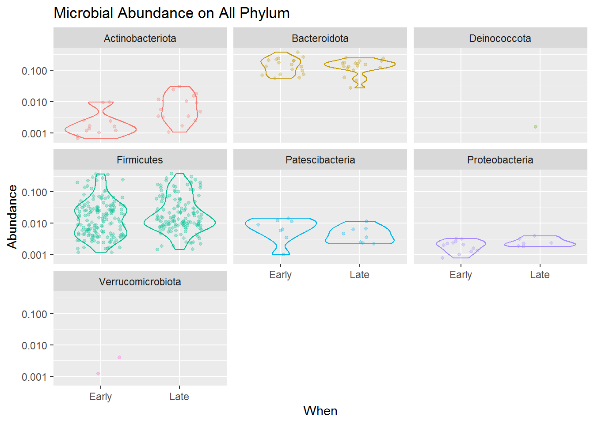
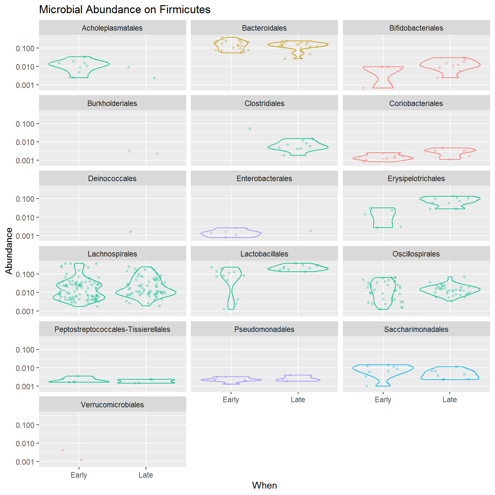

Chapter 6 Exploratory Data Analysis
Exploratory Data Analysis is perhaps the most insightful step we can do during microbiome analysis. It usually aims to discover patterns that may best distinguish and explain the data. Exploratory Data Analysis utilize visualization of the data by using common plots and multivariate projections such as PCoA.
6.1 Multivariate Projection
The first explanatory data analysis we will do is to perform multivariate projection of our sample data. This is to discover pattern that might best distinguish our data and use it for further analysis.
Before visualization, it is common to normalize our data. We can use transform_sample_counts() to define our specific function. In this example, we will log-transform our original abundance data as an approximate variance stabilizing transformation Ben J. Callahan (2016). We will use column When from sample data to annotate plots.
# making ordinate
out_wuf_log <- ordinate(ps_log,
method = "MDS", # for PCoA
distance = "wunifrac") # weighted Unifrac distance
# prepare eigen values to adjust axis
evals <- out_wuf_log$values$Eigenvaluesplot_pcoa<- plot_ordination(ps_log, out_wuf_log, color = "When") +
geom_text(aes(label = sample_names(ps_log)), size = 3, nudge_y = 0.02) +
labs(col = "Sampling Period") +
# to adjust axis length based on eigen values (variance it contains)
coord_fixed(sqrt(evals[2] / evals[1])) 
Based on the plot above, it is becoming more clear that there is a difference between microbial community came from the early and late sampling period. Refering back to our research question, “the mouse gut microbiome on the 10 days of post weaning (eating) period did encounter a shift/changes when we compared it to its late period”. But what are the changes? This can be explored more by plotting microbial abundance of our samples.
Besides discovering patterns, PCoA plot also useful for telling us whether there are outliers in our data. From the plot above, the sample F3D142 seems to be an outlier. We can remove the data before further analysis.
6.2 Microbial Abundandce
The next explanatory data analysis we will do is to check the microbial abundance within each sample (microbial sequence count per sample). Before visualization, it is common to normalize our abundance data. Same as before, we can use transform_sample_counts() to define our specific function. In this example, we will converts the microbial count stored in the ps_cut into frequencies per total count for each sample a.k.a proportions or relative abundance.
Here’s our abundance data before and after transformation:
## OTU Table: [3 taxa and 6 samples]
## taxa are columns
## ASV5 ASV8 ASV11
## F3D0 173 185 111
## F3D1 140 191 284
## F3D141 190 324 225
## F3D143 130 84 134
## F3D144 105 41 332
## F3D145 308 126 388## OTU Table: [3 taxa and 6 samples]
## taxa are columns
## ASV5 ASV8 ASV11
## F3D0 0.06995552 0.07480793 0.04488476
## F3D1 0.05513982 0.07522647 0.11185506
## F3D141 0.13868613 0.23649635 0.16423358
## F3D143 0.19877676 0.12844037 0.20489297
## F3D144 0.11972634 0.04675029 0.37856328
## F3D145 0.24463860 0.10007943 0.30818110In plotting microbial abundance it is best to follow our original research question, something that we really want to analyze. Like before, let’s plot the microbial abundance per sampling period. This information can support our analysis on our research question:
We want to understand the effect of the first 10 days of post weaning (eating) period to the stability of gut microbiome in the 140-150 day of post weaning period.
Now let’s plot our microbial abundace data using a DIY function. The function will result in microbial abundance per taxonomical rank we provided for each categorical features we ought to analyze.
Here are a list of Phylum taxonomical rank that we can analyze from the sample:
## [1] "Bacteroidota" "Firmicutes" "Proteobacteria"
## [4] "Campilobacterota" "Actinobacteriota" "Patescibacteria"
## [7] "Deinococcota" "Verrucomicrobiota"Note that in this tutorial, we only have the categorical features Day or When which stands for the day of sampling period.
## Subject Gender Day When
## F3D0 3 F 0 Early
## F3D1 3 F 1 Early
## F3D141 3 F 141 Late
## F3D143 3 F 143 Late
## F3D144 3 F 144 Late
## F3D145 3 F 145 Late
## F3D146 3 F 146 Late
## F3D147 3 F 147 Late
## F3D148 3 F 148 Late
## F3D149 3 F 149 Late
## F3D150 3 F 150 Late
## F3D2 3 F 2 Early
## F3D3 3 F 3 Early
## F3D5 3 F 5 Early
## F3D6 3 F 6 Early
## F3D7 3 F 7 Early
## F3D8 3 F 8 Early
## F3D9 3 F 9 EarlyIt is sufficient enough for our research question, therefore we’ll use that for analysis. But if your sample has more features to explore, you can explore it as much as you want with the DIY function below! Note that the DIY function will use functions from ggplot2 package so make sure you have loaded it into your session.
# DIY function
plot_abundance <- function(x = physeq, # phyloseq data
title = "",
Facet = "Phylum", # taxa rank for facets
Category = "When", # categorical features for x axis
Color = "Phylum",
legend = "none"
) {
mphyseq <- psmelt(x)
mphyseq <- subset(mphyseq, Abundance > 0)
ggplot(data = mphyseq,
mapping = aes_string(x = Category,
y = "Abundance",
color = Color, fill = Color)
) +
geom_violin(fill = NA) +
geom_point(size = 1, alpha = 0.3,
position = position_jitter(width = 0.3)) +
facet_wrap(facets = Facet, ncol = 3) +
scale_y_log10() +
labs(title = title) +
theme(legend.position = legend)
} The combined jitter and density plot above shown how each microbes (point) present in our samples based on its relative abundance for both early and late sampling period.
Based on the visualization, we know that the Phylum Firmicutes dominates the mouse gut microbiome compared to other taxa. That means the microbes present in the mouse gut mostly comes from the Phylum Firmicutes, and then accompanied by some other microbes from the Phylum Actinobacteria, Bacteroidota, Patescibacteria, and Proteobacteria.
Although the Firmicutes dominates the diversity of the mouse gut microbiome, its abundance is varied highly from low to high abundance. Compared to Bacteroidota which, although only having some microbial species present in our sample, most of the species have a high abundance in our sample. Meanwhile, Actinobacteria, Patescibacteria and Proteobacteria present in a more lower abundance.
Another thing we can take from the plot is that the microbial community is slightly changing from the early to the late period of mouse age. You can see that Firmicutes and Bacteriodota sligtly having lower abundance in its late period than its early one, and Actinobacteria which has slightly higher abundance in its late period.
By combining this microbial abundance and diversity data with the metabolic activities the microbiome can do (what kind of chemicals it can produce or consume in the gut) we may actually derive some insight on how the gut microbiome can affect the mouse metabolic activity or even health.
You can try to detail the diversity even more. Below is the code to plot a more detailed plot, for only the Phylum Firmicutes.

From the plot above we know that among Firmicutes, the Order Acholeplasmatales, Clostridiales, Enterobacterales, Erysipelotrichales, and Lactobacillales are some microbes that differentiate between early and late samples. Perhaps it can be used to distinguish between mouse in its early age or in its late age.
Additionally, phyloseq also provides other plot types commonly used to plot microbial abundance data. Such as this abundance bar plot below:

For more functions and visualization, you can go directly to the official demo page here.